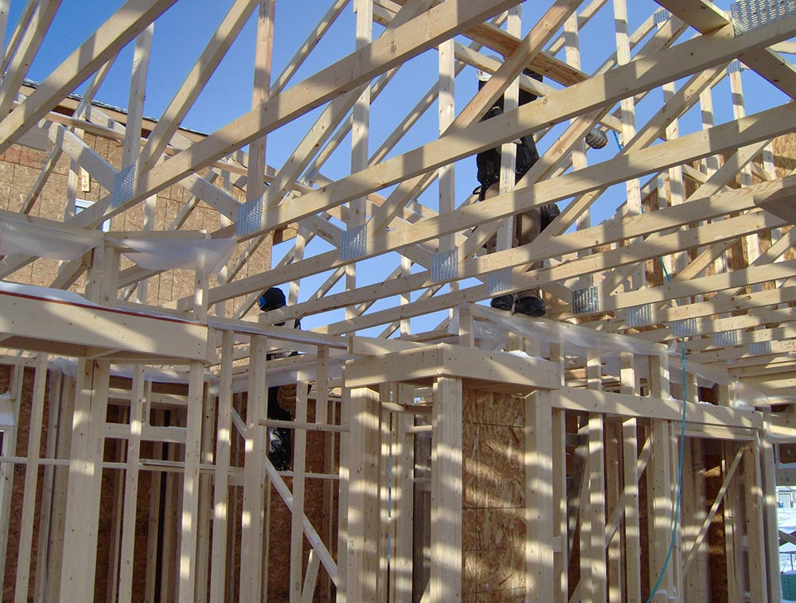
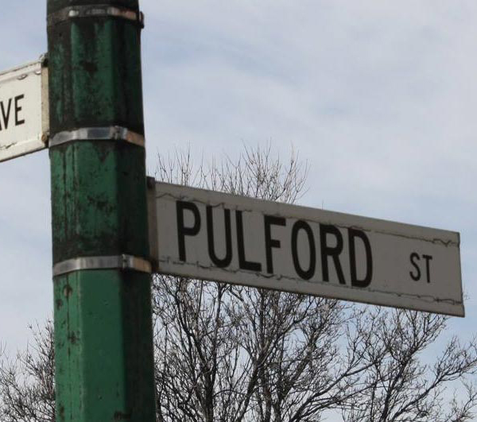

Forty years of open doors.
Pulford Community Living Services began in 1986 with a simple conviction: people with intellectual and developmental disabilities belong in community — not apart from it.
From one door to many
What began as a small Winnipeg organization has grown into supports that reach across three Manitoba regions — Winnipeg, the Interlake, and Eastman.
The work has changed over four decades; the conviction has not. Every program we run starts with one question: what does a full life look like for this person? Then we build the support around the answer — never the other way round.
Today that means day services, residential homes, support for families, and supported independent living — shaped person by person, at the pace of trust.

- I.Vision
- An equal and inclusive world.
- II.Mission
- To bring community together to promote and empower people to live a full life.
- III.Values
- Dignity. Safety. Respect. Integrity. Four words we hold ourselves to in every home, every program, every day.
A board rooted in community
Names below are illustrative for this design concept.
Three regions, one standard of care
I.Winnipeg
Our home base — day services, residential homes, and head office on Waverley Street.
II.Interlake
Supports in and around Lundar, close to home for rural Manitobans.
III.Eastman
Services centred on Ste. Anne, serving Manitoba's southeast.


Community is not a place. It is the people who hold the door for one another.